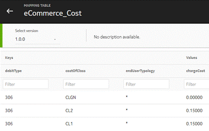
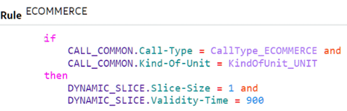
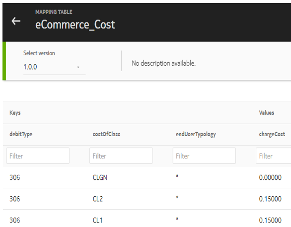
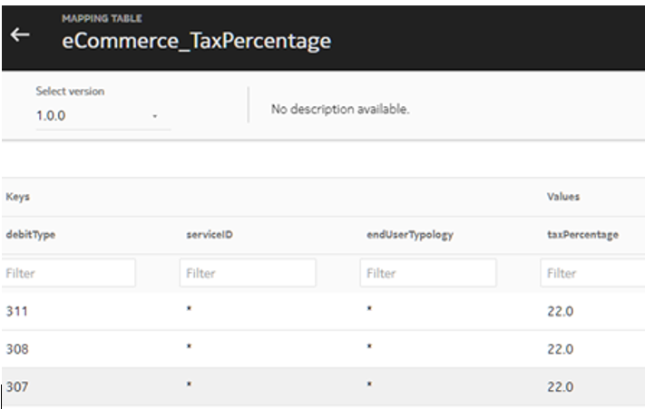

TMF-compliant eCommerce API supports the following scenarios in NCC:
- Charge the usage of an e-commerce service (charge request)
- Refund a charged e-commerce usage within a defined time period from its charging (historical refund request)
- Refund money for e-commerce usages (refund request)
- Reserve the usage of an e-commerce service (reserve request)
- Commit a reserved e-commerce usage within a defined time period from its charging (commit request)
- Cancel a reserved e-commerce usage within a defined time period from its charging (cancel request)
- Refund, automatically, a reserved e-commerce usage if no request for commit/cancel has been received within a time period from its reservation
- Display all the historical e-commerce usages of a subscriber or a single one (display request)
- Delete all the historical e-commerce usages of a subscriber or a single one (delete request)
- Insert one or more e-commerce usages into the historical storage of a subscriber (insert request)
- Verify whether a subscriber has sufficient credit for an e-commerce usage (check Balance request)
The following four TMF-compliant eCommerce APIs are available in NCC:
- POST /usage
- PATCH /usage
- GET /usage
- DELETE /usage
POST /usage ("charge" request)
Use this API to charge the cost of an e-commerce usage in a single step from the applicable monetary resources (balance account and/or secondary balance bucket) in a subscriber profile. The subscriber profile can be identified via its MSISDN, which is available in the input parameter service.supportingResource with type as E164.
The value in the input usageType identifies the action to execute (that is, eCommerce Charge).
The eCommerce usage to be charged is identified via an external identifier, so called transactionId, which can be received externally or auto-generated via charging RSV with a configurable format (auto-generation example rule: SYSTEM.Generate-UUID concat ";" concat ECOMMERCE.service.supportingResource.id concat ";" concat VARIABLES.Get-Variable ( "ECOM-Amount" )
The cost and applied tax percentage can be received directly in the input parameter ratedProductUsage or determined internally via a mapping table by using the information received in the input dynamic list usageCharacteristic as shown in the following figures:
|  |  |
These type of lists are useful to carry information to be written in the generated Charge CDR as it is or mediated via a mapping table as shown in the following figure:
{kind=link}
In general, such lists can be used to differentiate the relevant information among the different TMF-compliant OpCos.
The API is rejected in following situations:
- Mandatory input parameters are missed
- Input parameters are received with a wrong value
- The input subscriber is not equipped
- The input subscriber does not have any subscription
- Duplicated charge request is received (only if transaction history is enabled)
- Available credit in not enough to afford usage cost
- Usage Manager is not yet deployed (only if transaction history is enabled)
Further customized rejection scenario can be added via charging RSV such as:
- The subscriber typology (prepaid, postpaid, fixed line) is incompatible with the required eCommerce service type
- eCommerce traffic is barred by current SIM state
- internally determined usage cost and/or tax percentage are wrong
Once validation is successful, the usage cost is deducted from applicable monetary resources and a Charge CDR is generated for both success and failure.
The API response contains the quota amount charged on each involved monetary resource and the available remaining credit.
A new application preference, so called UM_For_Charge_CDR, controls whether there is the need to store the transaction with the relevant data in historical storage.
When the application preference is set as ENABLED, the eCommerce Charge CDR generated at successful charge time is stored in an external memory, called usage database, which is managed via the Usage Manager (UM) micro-service.
A built-in Aerospike mechanism, called TimeToLive (TTL), is used to implement the retention period for each received/auto-generated transactionId: at successful eCommerce Charge CDR insertion in Usage database the TTL is set, when the TTL expires a query towards the specific CDR fails although the CDR is still physically stored in the usage database. This allows to make the garbage collection process not synchronized exactly with TTL expiration.
During API processing the following triggers are instantiated in the given order:
| Order | Triggers | Notes |
|---|---|---|
| 1 | ECOMMERCE_CALL_ESTABLISHMENT |
This trigger collects and validate the dynamic information received in input. Attributes such as ECOMMERCE.Read-Usage-Characteristic and CALL_RESULT.eCommerce-Reject are used respectively to read the input dynamic information and reject the API when needed. Additionally, the auto-generated transactionId can be made known to API logic via the attribute CALL_RESULT.Load-Generated-TransactionId. |
| 2 | APPLICABILITY/RATING | This trigger determines the applicable monetary resources and have the external cost deducted from them. The attribute RATING.Rate-External-Cost is re-used to make the external usage cost available to rating engine with charging measurement as item |
| 3 | RATING_POST_PROCESSING |
This trigger executes any action needed after usage cost debiting such as:
|
POST /usage (“refund” request)
Use this API to refund cost of e-commerce usages from account main-balance in a subscriber profile. The subscriber profile can be identified via its MSISDN, which is available in the input parameter service.supportingResource with type as E164.
The value in the input usageType identifies the action to execute (that is, eCommerce Refund).
The transactionId can be received externally or auto-generated via charging RSV with a configurable format (auto-generation example rule: SYSTEM.Generate-UUID concat ";" concat ECOMMERCE.service.supportingResource.id concat ";" concat VARIABLES.Get-Variable ( "ECOM-Amount" ).
- Mandatory input parameters are missed
- Input parameters are received with a wrong value
- The input subscriber is not equipped
- The input subscriber does not have any subscription
- The subscriber typology (prepaid, postpaid, fixed line) is incompatible with the required eCommerce service type
- eCommerce traffic is barred by current SIM state
- Internally determined usage cost and/or tax percentage are wrong
Once validation is successful, the usage cost is deducted from the account main-balance and a Refund CDR generated for both success and failure.
The API response contains the quota amount refunded on the main-balance and the available credit remaining.
| Order | Triggers | Notes |
|---|---|---|
| 1 | ECOMMERCE_CALL_ESTABLISHMENT | This trigger collects and validate the dynamic information
received in input. Attributes such as ECOMMERCE.Read-Usage-Characteristic and CALL_RESULT.eCommerce-Reject are used respectively to read the input dynamic information and reject the API when needed. Additionally, the auto-generated transactionId can be made known to API logic via the attribute CALL_RESULT.Load-Generated-TransactionId. |
| 2 | APPLICABILITY/RATING | This trigger determines the applicable monetary resources and have the external cost deducted from them. The attribute RATING.Rate-External-Cost is re-used to make the external usage cost available to rating engine with charging measurement as item. |
| 3 | RATING_POST_PROCESSING | This trigger executes any action needed after usage cost
debiting such as:
|
POST /usage (“reserve” request)
Use this API to reserve the cost of an e-commerce usage from the applicable monetary resources (balance account and/or secondary balance bucket) in a subscriber profile.
Most of the description in POST /usage (charge request) is also valid for POST /usage (reserve request) with the following differences:
- The input usageType is eCommerce Reserve
- The transactionId can be received externally or
auto-generated via charging RSV with a configurable format (auto-generation
example rule:
SYSTEM.Generate-UUID concat ";" concat ECOMMERCE.service.supportingResource.id concat ";" concat VARIABLES.Get-Variable ( "ECOM-Amount" )) - When the transactionId is neither received nor auto-generated, the API is rejected
- During reservation, the usage cost is not deducted from applicable monetary resources but just reserved
- If reservation is successful, then a new ECUR session of type eCommerce is opened with ID is equal to the known transactionId (received in input or auto-generated)
- The eCommerce Reserve CDR generated when reservation is successful is not stored in usage database
- The API response contains the quota amount reserved on each involved monetary resource and the available credit remaining
At reserve time an item-based or money-based reservation can apply on request basis.
To avoid too many concurrent eCommerce session ongoing at the same time, use ME application preferences Allowed Concurrent eCommerce sessions per Device (refer to Global Configuration Guide). While opening a new eCommerce session, if the configured number is exceeded, the API is rejected.
For charge request, the ongoing eCommerce session has a retention period. After this period, the corresponding transactions cannot be committed. The retention period (in seconds) can be configured as dedicated quota slicing profile for e-commerce traffic in the Quota Management section of the SM GUI along with the other quota attributes, as shown in the following example:

POST /usage (“check balance” request)
Use this API to test the cost of an e-commerce usage can be afforded from the applicable monetary resources (balance account and/or secondary balance bucket) in a subscriber profile. The subscriber profile can be identified via its MSISDN, which is available in the input parameter service.supportingResource with type as E164.
The value in the input usageType identifies the action to execute (that is, check Balance).
The transactionId can be received externally or auto-generated via charging RSV with a configurable format (auto-generation example rule: SYSTEM.Generate-UUID concat ";" concat ECOMMERCE.service.supportingResource.id concat ";" concat VARIABLES.Get-Variable ( "ECOM-Amount" ).
The cost to be tested and applied tax percentage can be received directly in the input parameter ratedProductUsage or determined internally via a mapping table by using the information received in the input dynamic list usageCharacteristic as shown in the following figures:
|  |  |
{kind=link}
{kind=link}
In general, such lists can be used to differentiate the relevant information among the different TMF-compliant OpCos.
The API is rejected in following situations:
- Mandatory input parameters are missed
- Input parameters are received with a wrong value
- The input subscriber is not equipped
- The input subscriber does not have any subscription
- Available credit is not enough to afford usage cost
Further customized rejection scenario can be added via charging RSV such as:
- The subscriber typology (prepaid, postpaid, fixed line) is incompatible with eCommerce services
- eCommerce traffic is barred by current SIM state
- internally determined usage cost and/or tax percentage are wrong
Once validation is successful, the available credit in applicable monetary resources is checked against provided total amount.
In case it is enough, the generated API response contains the total amount to be tested, the amount quota affordable by each applicable monetary resource and the current available credit.
No CDR is generated for both success and failure.
During API processing the following triggers are instantiated in the given order:
| Order | Triggers | Notes |
|---|---|---|
| 1 | ECOMMERCE_CALL_ESTABLISHMENT |
This trigger collects and validate the dynamic information received in input. Attributes such as ECOMMERCE.Read-Usage-Characteristic and CALL_RESULT.eCommerce-Reject are used respectively to read the input dynamic information and reject the API when needed. Additionally, the auto-generated transactionId can be made known to API logic via the attribute CALL_RESULT.Load-Generated-TransactionId. |
| 2 | APPLICABILITY/RATING | This trigger determines the applicable monetary resources and have the external cost deducted from them. The attribute RATING.Rate-External-Cost is re-used to make the external usage cost available to rating engine with charging measurement as item |
| 3 | RATING_POST_PROCESSING |
This trigger executes any action needed after usage cost debiting such as:
|
PATCH /usage ("commit" scenario)
Use this API to commit the cost of an e-commerce usage previously reserved from monetary resources (balance account and/or secondary balance bucket) in a subscriber profile. The subscriber profile can be identified via its MSISDN, which is available in the input parameter service.supportingResource with type as E164.
The value in the input usageType identifies the action to execute (that is, eCommerce Commit).
The eCommerce usage to be refunded is identified via an external identifier, called transactionId, which allows to identify a specific ongoing transaction with the related usage cost to be committed.
The identifier of the committing transaction can be received externally or auto-generated via charging RSV with a configurable format (auto-generation example rule: SYSTEM.Generate-UUID concat ";" concat ECOMMERCE.service.supportingResource.id concat ";" concat VARIABLES.Get-Variable ( "ECOM-Amount" ).
The API is rejected in following scenarios:
- Mandatory input parameters are missed
- Input parameters are received with a wrong value
- The input subscriber is not equipped
- The input subscriber does not have any subscription
- The input transaction is not existing as ECUR ongoing session
- An input amount is received for an item-based reservation
Further customized rejection scenarios can be added via charging RSV.
Once validation is successful, the involved monetary resources and the quota amount to be deducted from each of them are derived from the ongoing ECUR session. For successful commit the ongoing ECUR session is closed.
Commit of amounts different from the reserved one is supported only when the corresponding reservation was money-based.
A Commit CDR is generated whether commit is successful or not reporting the really deducted amount.
The CDR contains also the lost amount when the available credit (including reserved amount) is not enough to afford the requested amount.
The API response contains the quota amount committed on each involved monetary resource.
During API processing, the following triggers are instantiated in the given order:
| Order | Triggers | Notes |
|---|---|---|
| 1 | ECOMMERCE_CALL_ESTABLISHMENT |
This trigger collects and validate the dynamic information received in input. Attributes such as ECOMMERCE.Read-Usage-Characteristic and CALL_RESULT.eCommerce-Reject are used respectively to read the input dynamic information and reject the API when needed |
| 2 | RATING_POST_PROCESSING |
This trigger executes any action needed after usage cost debiting such as:
|
PATCH /usage ("cancel" scenario)
Use this API to cancel the item/money based reservation of the usage cost from the monetary resources (balance account and/or secondary balance bucket) in a subscriber profile.
Most of the description in PATCH /usage (commit request) is also valid for PATCH /usage (cancel request) with the following differences:
- The input usageType is eCommerce Cancel
- The identifier of the cancelling transaction can be received externally or auto-generated via charging RSV with a configurable format (auto-generation example rule: SYSTEM.Generate-UUID concat ";" concat ECOMMERCE.service.supportingResource.id concat ";" concat VARIABLES.Get-Variable ( "ECOM-Amount" )
- During cancellation, the quota amount is not deducted from applicable monetary resources but just refunded
- The generated eCommerce Cancel CDR at successful refund time is not stored in usage database
- The API response contains the quota amount refunded on each involved monetary resource
- The auto-generated cancelling transactionId can be reported in a dedicated usageCharacteristic entry in the API response
The reserved quota amount is automatically refunded and ongoing ECUR session is closed when retention period expires. A dedicated AuditCancelCDR is generated when this scenario occurs.
PATCH /usage ("historical refund" scenario)
Use this API to refund the cost of an e-commerce usage previously charged from monetary resources (balance account and/or secondary balance bucket) in a subscriber profile. The subscriber profile can be identified via its MSISDN, which is available in the input parameter service.supportingResource with type as E164.
The value in the input usageType identifies the action to execute (that is, eCommerce Historical Refund).
Each request has two external identifiers:
- transactionId: Allows to identify a specific historical transaction charged in the past together with related usage cost to be refunded
- refundingTransId: Allows to identify the transaction asking for refunding
The API is rejected in following scenarios:
- Mandatory input parameters are missed
- Input parameters are received with a wrong value
- The input subscriber is not equipped
- The input subscriber does not have any subscription
- The transaction to refund is not existing
- The transaction to refund is owned from a different subscriber
- The transaction to refund was already refunded
- No monetary resource to refund is still subscribed in valid state
- Usage Manager is not yet deployed
Other customized rejection scenario can be added via charging RSV.
Once validation is successful, the involved monetary resources and the quota amount to be refunded for each of them are derived from the Charge CDR retrieved from historical storage via the internal API getCDRsByTransactionId.
Existing update/adjustBalance and adjustBucket is automatically called by API logic to refund the retrieved quota amounts respectively to balance account and secondary balance buckets.
If a bucket to be refunded is not more subscribed or in final state, the quota amount to be refunded is lost.
The HistoricalRefund CDR generated after refund occurred allows to distinguish on whether:
- The whole historically charged cost was refunded
(
listOfMscc/mscc/recordEventResulttag as 00) - Only a part of the historically charged cost was refunded
(
listOfMscc/mscc/recordEventResulttag as 16) - The refund was unsuccessful (
listOfMscc/ms cc/recordEventResulttag as 116)
To avoid same being transaction refunded multiple times, this CDR is stored in usage database and expires at same date/time as Charge CDR.
The API response contains the quota amount refunded on each involved monetary resource.
During API processing the following triggers are instantiated in the given order:
| Order | Triggers | Notes |
|---|---|---|
| 1 | ECOMMERCE_CALL_ESTABLISHMENT |
This trigger collects and validate the dynamic information received in input. Attributes such as ECOMMERCE.Read-Usage-Characteristic and CALL_RESULT.eCommerce-Reject are used respectively to read the input dynamic information and reject the API when needed. |
| 2 | RATING_POST_PROCESSING |
This trigger executes only the following actions because RE is not triggered at all during refund:
|
GET /usage
When an eCommerce event is charged or refunded the generated charge/refund CDR is stored in an external repository called usage database. Use this API to query a single historical eCommerce transaction at a time or all historical transactions owned by a subscriber.
The historical information retrieved from usage database via internal APIs
getCDRsByTransactionId (for single query) or
getCDRsByAccountId (for cumulative query) is then used to
recreate the charge/refund CDR in a different ME (each ME has its own usage database).
Each request has the following:
- The action to execute (that is, Get eCommerce)
- The subscriber owning the eCommerce transaction(s) to query
- The transactionId to query (only if a single transaction has to be queried)
The API is rejected in following situations:
- Mandatory input parameters are missing
- Input parameters are received with a wrong value
- The input subscriber is not equipped
- The transaction to query is not existing (for single query)
- The transaction to query is owned from a different subscriber (for single query)
- No historical transactions is owned from input subscriber (for cumulative query)
- Usage Manager is not yet deployed
Once validation is successful, the retrieved information on historical transactions is reported and it contains the following information:
- The subscriber owing the transaction
- The UUID of the related CDR object in usage database
- The identifier of the retrieved transaction
- The type of the retrieved transaction (charge or refund)
- The date/time of the retrieved transaction
- The date/time in which the retrieved transaction has been stored in usage database
- The date/time in which the retrieved transaction expires in usage database
- The cost of the retrieved transaction
- Whether the retrieved transaction has been already refunded (only for
chargetransaction) - The cost afforded on shadow balance
- The correlated refunding transaction (only for already refunded charge transaction)
- The correlated charge transaction (only for refunding transaction)
- The name of the default tariff plan
The Charging Service name for the default tariff plan
DELETE /usage
When subscriber is migrated from one ME to another, the historical transactions owned by the subscriber must be deleted from the usage database in the source ME. Use this API to delete a single historical eCommerce transaction at a time or all historical transactions owned by a subscriber in one go.
Each request has the following:
- The action to execute (that is, Delete eCommerce)
- The subscriber owning the eCommerce transaction(s) to delete
- The transactionId to delete (only if a single transaction has to be deleted)
The API is rejected in the following situations:
- Mandatory input parameters are missed
- Input parameters are received with a wrong value
- The input subscriber is not equipped
- The transaction to delete does not exist (for single delete)
- The transaction to delete is owned from a different subscriber (for single delete)
- No historical transactions is owned from input subscriber (for cumulative delete)
- Usage Manager is not yet deployed
Once validation is successful, the required historical transactions are deleted from usage database via internal API deleteCDRsbyTransactionId (for single delete) or deleteCDRsbyAccountId (for cumulative delete) and a successful acknowledge is returned.
POST /usage (“create” request)
When subscriber is migrated from one ME to another, the historical transactions owned by the subscriber must be recreated in the usage database in the target ME. Use this API to create a bunch of historical eCommerce transactions owned by a subscriber. Each request has the following information:
- The action to execute (that is, eCommerce Create)
- The subscriber owning the eCommerce transaction(s) to create
- The transactionIds to create and the related information got via GET /usage API
The API is rejected in the following situations:
- Mandatory input parameters are missed
- Input parameters are received with a wrong value
- The input subscriber is not equipped
- The transaction to create already exists
- Usage Manager is not yet deployed
Once validation is successful, the required historical transactions are created in usage database via internal API add CDRsbyTransactionId and a successful acknowledge is returned.
The following logic applies when creating historical transactions in usage database:
- A not-yet refunded charge transaction is created:
- One charge CDR object is created with charged transactionId, no refunding transactionId and other relevant information
- An already refunded charge transaction is created:
- If the identifier of the refunding transaction is not known, two CDR
objects are created:
- One charge CDR object with charged transactionId, no refunding transactionId and other relevant information
- Add refund CDR object with charged transactionId, no refunding transactionId and other relevant information
- If the identifier of the refunding transaction is known, a CDR object is created with charged transactionId, no refunding transactionId and other relevant information
- If the identifier of the refunding transaction is not known, two CDR
objects are created:
- A refunding transaction is created:
- If the identifier of the refunded transaction is not known, a refund CDR object is created with no charged transactionId, refunding transactionId and other relevant information
- If the identifier of the refunded transaction is known, a refund CDR object is created with charged transactionId, refunding transactionId and other relevant information